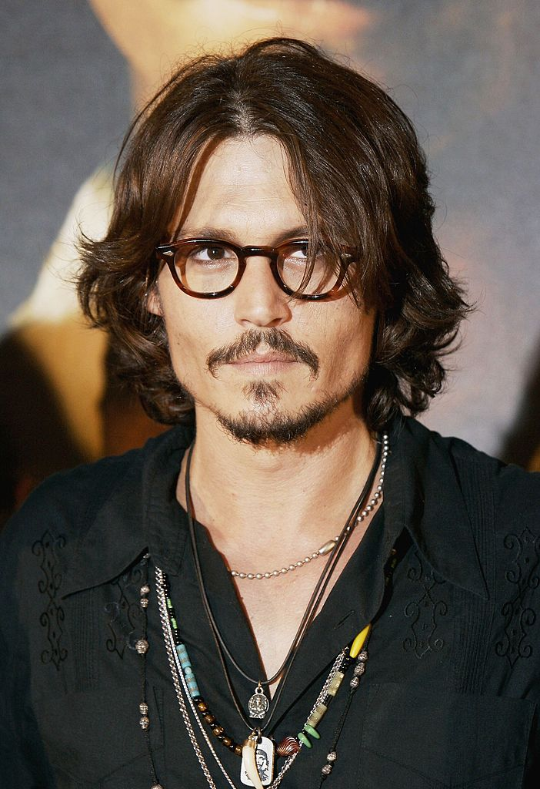
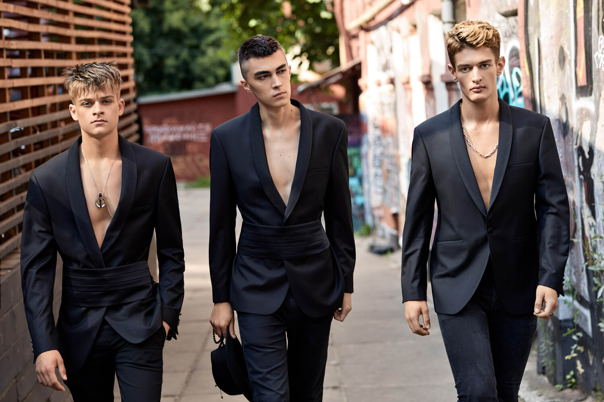

Мужские стрижки Киев
BarberShop - это не мужской салон красоты с набором стандартных форм. Поэтому модная стрижка для нас - это дизайн прически, который нельзя тиражировать. Не окантовка и не мужская стрижка "короче", - модельную стрижку поддерживают не реже, чем раз в один - три месяца.
Идеализация работы парикмахера - стилиста заставляет мастера держать в голове множество вариантов. Но желательно к моде относится с иронией. Можно цитировать уличную моду с очень подогнанными краями, окантовкой в стиле «бахрома» и тяжелыми, градуированными формами. От 50-ых со стилем Рок-н-Рол, аккуратным градуированным затылком и большой несведенной длиной сверху, стрижек «по индивидуальной мерке», до стиля реперов, которые делают из уличной моды деньги. Ни факт, что реальная картинка должна быть близка вам по духу. Но она повлияет на вас и окружающих. И что из этого следует? При всех фантазиях на тему трендов в мужской стрижке, главное качество мастера - дизайнера: эмпатия, безупречная техника и моделирование.
Как стригутся звезды?
Нас спрашивают, почему мы так много обучаемся в британской академии Sassoon. Но это такое же удовольствие, как время проведенное любителями футбола за просмотром матчей. Вы смотрите футбол, а мы обращаем внимание на мужской стиль футбольной элиты. Посмотрите иначе на клуб миллионеров, гоняющих мяч. Обратите внимание на прически парней - миллиардеров силиконовой долины. Какой стиль, длину, форму мужской стрижки выбирают представители большого бизнеса.
Дизайн стрижки
Любая модель прически как у художников имеет соответствующие характеристики: куб, перспектива, линия, свет, тень, геометрические фигуры. Это основа оттачивания школы. А когда художник набирает мастерство, он «живо» пишет.
Схемы стрижки читаются как партитура. Они предлагаются для базового обучения, но не являются основой для индивидуального подбора мужчинам. Если мы думаем о персональном подборе для мужчин на короткие, средние, длинные волосы, то говорим об обратной перспективе. Как в архитектуре. У клиента не должно быть проблем с укладкой.
Если у мастера есть объемное представление обратной перспективы, знание особенностей различной структуры волос, то уложить стрижку будет легко. Мужская стрижка для вьющихся, кудрявых, ровных, торчащих волос отличается. Жесткость волос относительно регулируется правильным уходом, стайлингом (средства для укладки волос).
Также распространена проблема выпадения волос у мужчин. Другая - седина, которая корректируется камуфляжем.
Алопеция (выпадение волос) требует раннего постоянного ухода. В отличие от женского облысения, ее нельзя лечить изнутри. Наследственная, возрастная алопеция связана с повышение мужских гормонов. Если их снижать, снижается потенция. Поэтому путь контроля исключительно внешний. Мезороллер, мезотерапия - усилят эффект. Как минимальная программа - постоянное нанесение сывороток. Выбор поможет сделать мастер.
ПОЧЕМУ СТРИЖКА СТОИТ ДОРОГО?
Кто кого находит? Клиент - салон или салон - клиента?
Парикмахер - это художник. И клиент ищет мастера с нужным потенциалом, чтобы себя проявить через имидж.
Идите куда вам хочется. Можно идти в барбершоп, а можно подстричься в салоне красоты. Стрижка ручной работы будет стоить дороже. Кто хочет получить стрижку ручной работы без применения машинки, должен понимать различие в цене. Хотя, многим понимать не нужно. Эти стрижки для определенной группы людей, которые могут отличить дорогие вещи ручной работы. Серьезные богатые люди ведут себя предельно вежливо и ценят такую работу.